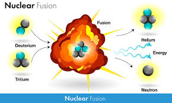
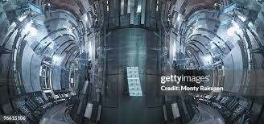

1. What is Fusion Energy?
Fusion occurs when two light atomic nuclei combine to form a heavier nucleus. In stars like the Sun, hydrogen atoms (specifically isotopes like deuterium and tritium) fuse under extreme pressure and temperature, releasing energy in the form of light and heat.
For example, the reaction that powers the Sun is:
Deuterium (D)
+
Tritium (T)
→
Helium (He)
+
Energy (heat)
Deuterium (D)+Tritium (T)→Helium (He)+Energy (heat)

In a fusion reactor, scientists aim to replicate this process in a controlled environment on Earth, using fuel like deuterium (which can be extracted from seawater) and tritium (which can be bred from lithium).
2. Advantages of Fusion Energy
Clean Energy: Fusion produces no greenhouse gases or air pollutants during operation. The primary byproduct of the most common fusion reactions (deuterium and tritium fusion) is helium, which is harmless.
Abundant Fuel Supply: The main fuel, deuterium, is plentiful in seawater, and lithium, used to breed tritium, is also abundant. This could provide a virtually limitless supply of fuel for fusion reactors.
No Long-lived Radioactive Waste: Unlike fission, which generates long-lived radioactive waste that requires secure storage, the fusion process produces only minimal, short-lived radioactive byproducts. Any waste produced in fusion reactors has a much shorter half-life, decaying to safe levels in a matter of decades rather than centuries.
Inherently Safe: Fusion reactions are inherently safer than fission. If a fusion reactor were to malfunction, the reaction would simply stop, as fusion requires extremely high temperatures and pressures to sustain. There is no risk of a "meltdown" as there is with nuclear fission reactors.
3. Challenges of Achieving Controlled Fusion
While the potential of fusion is vast, achieving a self-sustaining, controlled fusion reaction on Earth has proven extremely challenging. Some of the major hurdles include:
Achieving the Right Conditions: Fusion requires extreme conditions—temperatures of millions of degrees Celsius (around 150 million °C for deuterium-tritium fusion), creating a plasma where electrons are separated from atomic nuclei. At these temperatures, the fusion fuel becomes a plasma, which needs to be contained and controlled.
Plasma Confinement: One of the biggest challenges is containing the superheated plasma. Since no material can withstand direct contact with such high temperatures, physicists use powerful magnetic fields to keep the plasma suspended and contained. The two main approaches to this are magnetic confinement and inertial confinement.
Magnetic Confinement Fusion (MCF): In this method, plasma is confined using magnetic fields. The most well-known example is the tokamak design, a doughnut-shaped device that uses strong magnetic fields to contain the plasma.
Inertial Confinement Fusion (ICF): This approach uses lasers or other means to compress small fuel pellets to extremely high densities and temperatures. The National Ignition Facility (NIF) in the United States is one of the major research facilities focused on this technique.
Sustaining the Reaction: Achieving fusion is one thing; maintaining it long enough to extract usable energy is another. The energy output of the reaction must exceed the energy input (known as net energy gain) to make fusion a viable power source. This has been a major barrier for decades.
Tritium Supply: Tritium is a rare isotope of hydrogen and does not naturally occur in large amounts on Earth. It must either be produced in the fusion reactor itself (by breeding it from lithium) or supplied externally. This adds complexity to the design and operation of fusion reactors.
4. Fusion Reactor Designs and Concepts
Tokamak: A tokamak is a doughnut-shaped fusion reactor that uses powerful magnetic fields to contain hot plasma. The International Thermonuclear Experimental Reactor (ITER), currently under construction in France, is the largest and most ambitious tokamak in the world, aimed at proving that fusion can be achieved with a net positive energy output.
Stellarator: A stellarator is another type of magnetic confinement device, similar to a tokamak, but with a more complex shape. It is designed to produce more stable magnetic fields to contain the plasma. The Wendelstein 7-X in Germany is the largest stellarator in operation, which aims to demonstrate the viability of this approach.
Inertial Confinement Fusion (ICF): In ICF, powerful lasers or other energy sources are used to compress a small pellet of fusion fuel. The National Ignition Facility (NIF) in the U.S. and Laser Mégajoule (LMJ) in France are major facilities working on inertial confinement fusion.
Magnetized Target Fusion (MTF): A hybrid approach that combines magnetic confinement and inertial compression. This method uses magnetic fields to stabilize the plasma while applying compression to increase pressure and temperature.
Polywell Fusion: A proposed concept that uses magnetic and electrostatic fields to create a "cage" to contain a plasma. While still experimental, it is a promising approach for compact fusion reactors.
5. Notable Fusion Energy Projects
ITER (International Thermonuclear Experimental Reactor): The ITER project in France is currently the largest and most ambitious fusion energy project in the world. It aims to demonstrate that nuclear fusion can be achieved at a scale that produces more energy than is put in (a concept known as "break-even"). ITER is expected to achieve this goal by 2025 or 2030, with a planned goal of generating 500 MW of power from just 50 MW of input.
NIF (National Ignition Facility): Located in California, NIF is focused on achieving fusion through inertial confinement. In 2021, NIF made significant strides by achieving a major breakthrough in fusion energy output, reaching ignition (when the fusion reaction becomes self-sustaining) for the first time, though sustained and net-positive fusion is still years away.
SPARC (Boston Fusion): SPARC, a project led by Commonwealth Fusion Systems in collaboration with MIT, is developing a compact, high-field tokamak reactor. Their goal is to achieve net-positive energy in a smaller and more cost-effective fusion reactor. SPARC is expected to achieve its first plasma by the late 2020s.
Helion Energy: A private company working on a novel fusion energy approach using a combination of magnetic and inertial confinement. Helion’s goal is to develop smaller fusion reactors that can generate clean electricity on a commercial scale.
Tokamak Energy: Based in the UK, Tokamak Energy is also developing compact fusion reactors using the tokamak design. Their aim is to demonstrate a commercially viable fusion power plant by 2030.
6. Fusion Energy and the Future of Power Generation
If achieved, fusion energy could dramatically change the global energy landscape, providing:

Sustainable Energy: Fusion energy could supply an almost limitless and sustainable source of power.
Clean Energy: As it produces no greenhouse gases or long-lived radioactive waste, fusion is a key technology in addressing climate change and reducing our reliance on fossil fuels.
Energy Independence: Fusion’s reliance on abundant fuel sources like deuterium from seawater could reduce the world’s dependence on finite resources like oil and gas.
However, despite decades of research and significant progress, fusion energy is still not ready for commercial deployment. The challenges of achieving stable, sustained fusion reactions, efficiently converting that energy into electricity, and scaling up the technology remain formidable.
7. The Timeline for Fusion Energy
While the technical challenges are significant, many experts believe fusion energy could become a reality within the next few decades. With several international and private sector fusion projects making rapid progress, 2030-2050 is often cited as a potential timeline for achieving the first commercially viable fusion power plants. However, the exact timeline depends on continued breakthroughs, successful testing, and overcoming the technical challenges of fusion confinement, materials, and energy extraction.
Would you like more information on a specific fusion energy concept, a detailed look into one of the major projects like ITER or SPARC, or a deeper dive into the potential environmental impact of fusion energy? Let me know!